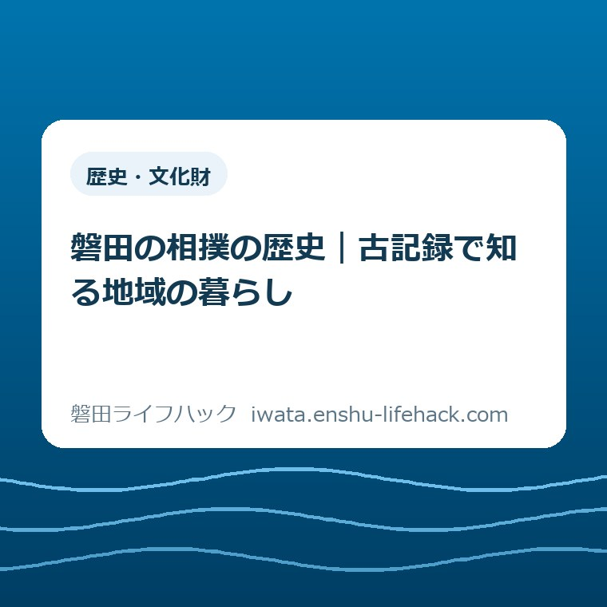

歴史・文化財
磐田の相撲の歴史｜古記録で知る地域の暮らし

この記事の要点
Q. 磐田の相撲は、地域の暮らしとどう結びついてきたの？
A. 磐田の相撲の歴史は、江戸相撲の力士、神社の奉納相撲、興行、昭和から令和の相撲を通してたどれます。歴史文書館の企画展は2026年11月4日〜12月25日、竜洋支所1・2階で開催。展示は無料・申込み不要です。古記録から暮らしを読む入口として、まず市公式ページで展示内容と観覧条件を確認してください。
地域が残してきた紙と写真から、相撲を見る
磐田の相撲の歴史を知るには、土俵での勝敗だけでなく、地域に残された文書や写真にも目を向けたいところです。記録が残るまでには、書く人、しまう人、持ち主を引き継ぐ人の手間があります。展示に並ぶ資料の手前には、その積み重ねがある。私は、まずそこを認めてから相撲の話を読みたいと考えます。
大石浩之（磐田市／不動産業）です。この記事は、2026年10月14日に確認した磐田市公式の展示案内をもとに書いています。開幕前のため、展示室を訪れた感想ではありません。個々の古記録の文字や写真の人物も、この記事で読み解いたわけではありません。確認できた展示の範囲と、私が提案する見方を分けてお伝えします。
相撲という一つの題材にも、力士の活動、神社での行事、観客を迎える興行という違う入口があります。市の案内は、その違いを文書や写真でたどる企画を示しています。「磐田の相撲」と一括りにして、すべてを同じ習慣の続きと受け取る必要はありません。誰が、いつ、どこで関わった記録なのかを、展示の説明と一緒に確かめる読み方ができます。
展示観覧と関連イベントでは、申込みや費用の条件が異なります。参加の可否も催しごとの条件で変わるため、「無料・申込み不要」をページ全体に当てはめないでください。今日することは、参加予定を急いで決めることではありません。公式ページの「内容」を開き、何が紹介される展示なのかを一つ確認することです。
11月開幕「古記録に見る相撲と磐田」の基本情報
磐田市「歴史文書館第30回企画展関連イベント」は、2026年10月14日更新の公式案内です。第30回企画展の題名は、スポーツのまち磐田「古記録に見る相撲と磐田」。開催期間は2026年11月4日（水曜）から12月25日（金曜）です。会場は、磐田市竜洋支所1・2階の歴史文書館展示室と案内されています。
企画展の開催時間は午前9時から午後4時30分で、入館は午後4時までです。施設ガイドの通常の利用時間とは異なる記載なので、この企画展へ行く場合はイベントページの時間を確認してください。夕方に立ち寄るつもりなら、展示が終わる時刻より、入館できる時刻を先に家族の予定に置くと、移動の段取りを考えやすくなります。
企画展の案内は平日の開館を基本とし、11月29日（日曜）と12月13日（日曜）を特別開館日としています。一方、磐田市の施設ガイド「歴史文書館」は、土曜・日曜・国民の祝日・年末年始を通常の休館日として掲載しています。「会期中なら毎日入れる」とは読まず、祝日や例外日は両方の公式案内で確認したいところです。
展示の対象はどなたでも、観覧料は無料、展示観覧の申込みは不要です。磐田市の施設ガイドでは所在地を磐田市岡729-1、竜洋支所内としています。駐車場は竜洋支所と共用です。本記事では満車の時間帯や駐車可能台数は確認していないため、車での訪問を確実に保証する案内にはしていません。
江戸相撲・奉納相撲・興行は、違う窓口になる
磐田市の企画展案内は、江戸時代からの古記録を文書や写真として紹介すると説明しています。展示対象には、江戸相撲で活動した力士、地元の神社での奉納相撲、相撲興行が含まれます。昭和、平成、令和の相撲も扱うため、江戸時代だけの古文書展ではありません。時代を追う展示という点が、暮らしの変化を考える入口になります。
力士に関する資料を見るなら、私は名前だけで終えず、資料に地名や年月、関係する人の説明があるかを確かめたいと考えます。ただし、公式の概要には具体的な力士名や出身地の一覧は載っていません。著名な力士との関係をここで補ってしまうと、展示で確かめるべきことを先回りして決めることになる。その線は越えないようにします。
神社の奉納相撲は、市が展示の対象として明記する項目です。私なら、相撲を行う場所と、そこに人が集まる機会の関係に注目します。奉納という言葉だけから、どの神社でも同じ目的や運営だったとは言えません。特定の神社名、祭日、参加者、費用については、個々の展示資料に説明があるかを見て判断するつもりで読むのがよいと考えます。
相撲興行の資料について、私は、競技を見せる側と見に来る側の関係を考える入口になると思います。開催の知らせに場所や日付があれば、人が移動し予定を合わせたことを考える材料になります。ただし、今回どの種類の文書が出るかは案内の概要だけでは確定できません。番付や勘定帳が必ず出る、商店の売上が分かる、といった約束はできません。
磐田の相撲を「昔から変わらない伝統」と一文で終えるのは、私には惜しく感じられます。江戸から令和までを扱うという市の構成は、同じ競技が違う時代にどう記録されたかを見比べる機会です。何が続き、何が変わったのかは、資料ごとの確認が必要です。結論を展示へ持ち込むより、違いを一つ見つけるつもりで出かけたいと考えます。

古記録を暮らしへつなぐ、三つの問い
磐田の相撲の展示を暮らしの歴史として読むなら、「いつ・どこで」「誰が関わったか」「何のために残したか」という三つの問いが使えます。これは市が示した鑑賞方法ではなく、私の提案です。資料の解説に答えがない問いもあります。分からない部分を残したまま、確認できたことだけを持ち帰る読み方を勧めたいと思います。
一つ目は、年月と場所です。同じ相撲でも、神社での行事と興行では、場所の説明が違う可能性があります。写真の撮影年月と、写っている出来事の年月が同じかも確認したいところです。説明が年だけなら、日付まで推測して埋めない。地名が読めないときは、展示の解説にある表記を頼りにし、今の住所へ無理に置き換えないようにします。
二つ目は、記録に見える人の役割です。力士の名前が中心にあっても、書いた人や撮影した人まで分かるとは限りません。私は、説明に世話役や主催者の記載があれば、勝敗とは別の仕事として見たいと思います。運営の具体が分からない資料を見て、地域の誰もが同じ負担をしたと決めつけることも避けたい。名前のない人の仕事は、想像と事実を分けて考えます。
三つ目は、記録の用途です。人へ知らせるための紙と、出来事を残す写真では、伝えようとする範囲が違うかもしれません。私は、資料が何を示すかに加え、何を示さないかにも目を向けます。写真に人が写っていても、参加した理由までは分からない。文書に名前があっても、その人の感情までは読めない。暮らしへ近づくには、この留保も必要だと考えます。
古い紙がデータになったときの見方については、磐田市「史料を遺す」展と古文書のデジタル化の記事で、画像と原本の扱いを分けて整理しました。今回の主題は、デジタル化の方法ではなく相撲の記録が持つ内容です。二つの記事を読む場合も、保存の技術と記録の解釈を分けると話を混同しにくくなります。
写真一枚から、地域全体を決めつけない
磐田市の企画展は文書と写真をもとに相撲の歴史をたどりますが、古い写真一枚は地域全体の説明ではありません。撮影された瞬間と、写真の外にあった暮らしは区別する必要があります。相撲が地域にどう結びついたかを知りたいときほど、一枚の印象を土地の人全員の習慣へ広げない読み方が役に立ちます。
たとえば、人が集まる写真が展示されていたとしても、その画像だけで仕事を休んだ人数や家計への負担は分かりません。これは特定の展示写真についての説明ではなく、資料を読む際の例です。人数を数えられることと、事情が分かることは別です。私は、見える人数に驚いて終えるより、解説がどこまで説明しているかを読む方が暮らしに近づくと思います。
時代の違う写真を見比べる際も、撮影場所や目的が違えば、写り方が変わります。服装や建物が目に入っても、その資料に説明がなければ名称を決めない。古い記録から知る面白さは、推測をすべて言い切ることにあるわけではありません。「これは分かったが、ここは分からない」と分けられれば、次の資料を見る問いが残ります。
学校という別の題材で地域の記録を読む入口は、歴史文書館の小学校展を扱った記事にもあります。小学校展と今回の相撲展は別の展示です。過去記事を、相撲展の会期や展示品の根拠として使わないでください。同じ文書館でも、扱う主題が変われば、調べたい暮らしの場面も変わります。
良い点——力士だけでなく、集まる場所も扱う
磐田市の相撲企画展の良い点は、力士の活動と神社の奉納相撲、興行を同じ主題の中に置いていることだと私は考えます。相撲を知っている人は競技から入り、地域の行事に関心がある人は場所から入れます。競技の知識を先にそろえなくても、展示資料の説明を通して、自分の関心に合う入口を探せる構成です。
江戸時代に限らず、昭和から令和までを扱う点も、私は評価します。古い出来事だけを眺めると、暮らしとの距離を感じる人もいるでしょう。時代を追う構成なら、自分が知る時代と古い記録との間に、問いを置けます。ただし、その連続性が具体的にどう示されるかは、開幕後の展示で確かめる部分です。案内だけで成果を評価しきらないようにしたいと思います。
展示観覧が無料で申込み不要という案内は、予定を決める側にも分かりやすい条件です。私が良いと感じるのは、予約手続きを経ずに資料に触れる入口があることです。一方、移動の時間、家族の送迎、仕事の調整まで消えるわけではありません。無料という一語だけで、誰でも同じように行きやすいと言い切ることはできません。
市の施設ガイドは、古文書や地域の古い写真を後世に伝えたい方に、歴史文書館への連絡を案内しています。家庭や地域に残る記録と、収集・保存・公開を担う施設の間に相談の入口がある。私は、展示を見て終わりにせず、記録の行き先を考えられる点を評価します。ただし、すべての資料が必ず受け入れられるという意味ではありません。
注文したい点——観覧と関連イベントを読み分ける
相撲企画展の案内について注文したい点は、展示観覧と関連イベントの条件の違いが、忙しい家族にも伝わる形で見えると助かる、ということです。市のページには、それぞれの申込みや費用が記載されています。情報がないという批判ではありません。私としては、予定を合わせる人が最初に違いを拾える案内を望みます。
展示解説は、11月29日（日曜）は午前10時、12月13日（日曜）は午前10時と午後2時に案内されています。直接会場へ来る形です。展示解説の時間に合わせることと、特別開館日に自由に展示を見ることは同じ予定ではありません。解説を聞きたい方は開始時刻を、展示だけを見たい方は観覧時間を確認する読み分けになります。
歴史学習会は11月29日（日曜）午後1時30分〜午後3時30分、竜洋支所2階会議室で開催予定です。参加費は無料ですが、定員50人の先着で、11月1日（日曜）から電子申請による申込みと案内されています。無料でも申込みが要る催しです。展示の「申込み不要」と取り違えないよう、学習会の欄を別に確認してください。
施設見学バスツアーは12月4日（金曜）午前9時〜午後3時30分、定員30人の先着です。市は昼食代900円を案内し、11月1日（日曜）から電子申請で申込みを受けるとしています。ここでは料金の全体を推定せず、掲載された昼食代だけを記します。参加を考える方は、実施要領も含め公式案内の条件を確認する必要があります。

大石の視点——残す人の時間を勘定に入れる
私は、地域の歴史を語るなら、記録を残してきた人の時間を勘定から外してはいけないと考えます。「文化を大切に」で済ませても、紙をしまう場所、持ち主の引継ぎ、整理する手は用意できません。記録があることを喜ぶなら、次に誰が何をするかまで考えたい。立派な言葉より、回せる段取りの方が暮らしを支えます。
これは私の意見であり、今回の展示で特定の家庭の負担が示されると断定するものではありません。不動産業という立場から家や土地を考えるときも、残すという判断には場所と時間が伴います。相撲の記録の価値を私が査定することはできません。できるのは、資料が残るまでの仕事を、無料のように扱わないという線を自分の文章に引くことです。
私にも迷いがあります。歴史を知る入口を軽くしたい一方で、担い手の手間を強く書くと、読む人に「保存の仕事まで頼まれるのか」と感じさせるかもしれません。展示を見に行く人全員へ、保管や寄贈の役割を求めたいわけではありません。まず資料の説明を一つ読む。それも、残した人の仕事を受け取る一つの形だと私は考えます。
行事を支える段取りという別の入口には、中野白山神社の白酒と秋の仕込みの記事があります。白酒の記事は、今回の相撲展で中野白山神社が取り上げられる根拠ではありません。地域の行事を完成した姿だけで見るか、準備の手間まで見るかという、私の読み方をつなぐための関連リンクです。
対案・結論——今日の一歩は公式の「内容」確認
2026年10月14日にできる一歩は、磐田市公式「歴史文書館第30回企画展関連イベント」の「内容」を確認することです。江戸相撲の力士、神社の奉納相撲、興行、昭和から令和の相撲という展示対象を読めば、自分が知りたい暮らしの入口を選べます。今日は訪問日やイベント参加を決めなくても、展示で聞きたい問いが一つ増えれば十分です。
私なら、読みたい題材を一つだけ選んでから会期と開館条件を見ます。興味が奉納相撲なら、実際にどの資料で紹介されるのかを展示で確かめる問いにする。力士なら、地域とのつながりがどう説明されるかを見る。これは持ち物や作業を増やすためではなく、案内を読む順番を短くする提案です。全文を暗記する必要はありません。
展示へ足を運ぶ場合は、企画展の入館が午後4時までであることと、通常休館日、特別開館日を公式ページで照合してください。家族の事情で日程を合わせにくければ、無理に参加を約束しなくても構いません。関連イベントの席が確保できるかも、記事公開時点では保証できません。確定していない予定を、家族の決定事項にしないようにしたいと思います。
本記事は磐田市公式の案内を生活の言葉で読み直した非公式記事です。制度や参加条件は個別の催し・事情で変わり、時間や募集状況も変更される場合があります。資料の寄贈・利用については歴史文書館へ、資格判断が関わる個別相談は適切な専門家へ確認してください。相撲の展示内容と観覧条件の最終確認は、必ず磐田市公式ページでお願いします。
よくある質問
磐田の相撲の歴史は、どんな記録で分かりますか？
市の企画展案内では、江戸時代からの文書や写真をもとに、江戸相撲の力士、神社の奉納相撲、相撲興行、昭和から令和の相撲を紹介します。特定の力士名や展示品一覧は概要では確認できません。個々の地域との関係は、展示の資料と解説で確かめてください。
相撲企画展はいつ、どこで見られますか？
2026年11月4日〜12月25日、竜洋支所1・2階の歴史文書館展示室です。午前9時〜午後4時30分、入館は午後4時まで。平日を基本に11月29日・12月13日は特別開館です。祝日の通常休館もあるため、行く日の条件は市公式で確認してください。
展示は予約が必要ですか？ 関連イベントも無料ですか？
展示観覧は無料・申込み不要です。歴史学習会は無料でも先着50人で申込みが必要。施設見学バスツアーは先着30人で申込みが必要で、昼食代900円が案内されています。両方の申込み開始は2026年11月1日です。展示と各イベントの欄を分けて公式確認してください。
参考にした公式情報
- 歴史文書館第30回企画展関連イベント／磐田市（2026年10月14日確認）
- 施設ガイド 歴史文書館／磐田市（2026年10月14日確認）
最終確認日：2026-10-14 ／ 本記事は公表情報と執筆者の見解を分けて記載しています。制度・数値・公開状況は変更される場合があるため、最新情報は磐田市公式ページでご確認ください。